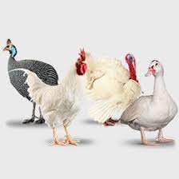
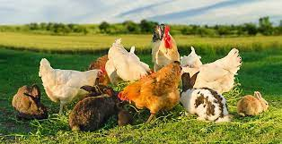
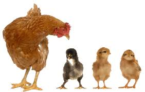
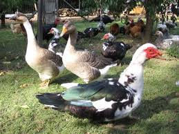

Description
L’agriculture togolaise emploie à peu près soixante pourcent de la population active. Mais cette dernière se voit décourager par ce secteur vu les moyens rudimentaires jusqu’alors utilisés.
En outre il est à noter que les jeunes filles et femmes n’ayant pas souvent accès aux terres pour pratiquer l’agriculture, l’élevage se présente comme un substitut à même de les assurer une activité à revenu décent.
C’est dans cette optique que VOLATO (Volailles Togo) se donne pour ambition d’apporter un vent nouveau de modernisation audit secteur. Laquelle modernisation permettra de faire passer le pourcentage de jeunes filles et femmes éleveurs de quinze pourcent (DSID RNA 2012) à au moins soixante pourcent d’ici 2030.
On remarque que les produits d’élevage villageois au Togo à l’exception des pintades sont vendus ponctuellement pour assurer soit des dépenses de santé pour les membres de la famille soit les frais de scolarité pour les enfants

Objectifs
VOLATO par son apport technique va permettre d'augmenter le rendement et donc les revenus chez les éleveurs.
VOLATO apportera aux femmes et jeunes filles une activité à revenu décent et à leurs portée au vu des difficultés qu'elles ont à pratiquer l'agriculture.
Ce projet fournira également un apport protéinique peu couteux , palliant ainsi à la malnutrition infantile.
En apportant une source de revenu supplémentaire à chaque foyer ,VOLATO se fixe pour objectif d'assurer la sécurité alimentaire d'une part puis d'éradiquer l'extrème pauvreté de l'autre d'ici 2030.
VOLATO vient donc pallier à ce problème de budget familial limité.
L’agriculture et l’élevage étant complémentaire (les produits de l’agriculture constituent de la provende pour l’élevage dont les déchets en constituent de l’engrais pour l’agriculture), le développement de l’élevage contribuera directement à l’amélioration du rendement agricole et donc à l’éradication de la faim.

Realisations
Par manque de financement,nous n'avons encore aucune réalisation

Viabilité
VOLATO est un projet naissant mais viable car répondant aux défis et besoins réels constatés chez les éleveurs ruraux